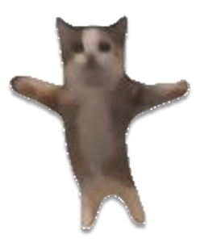
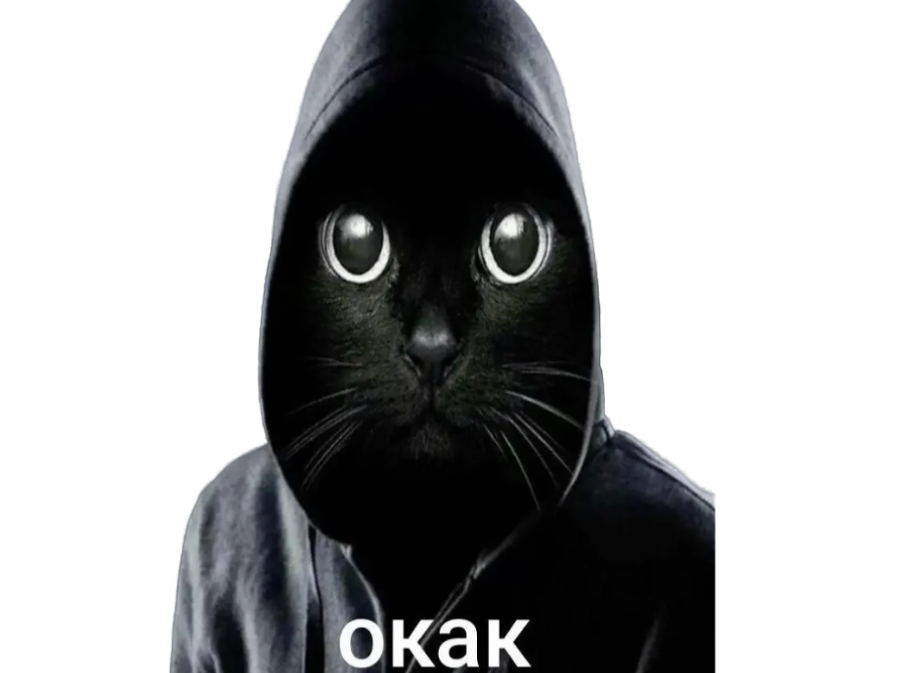
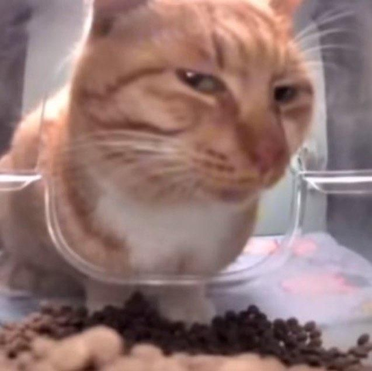
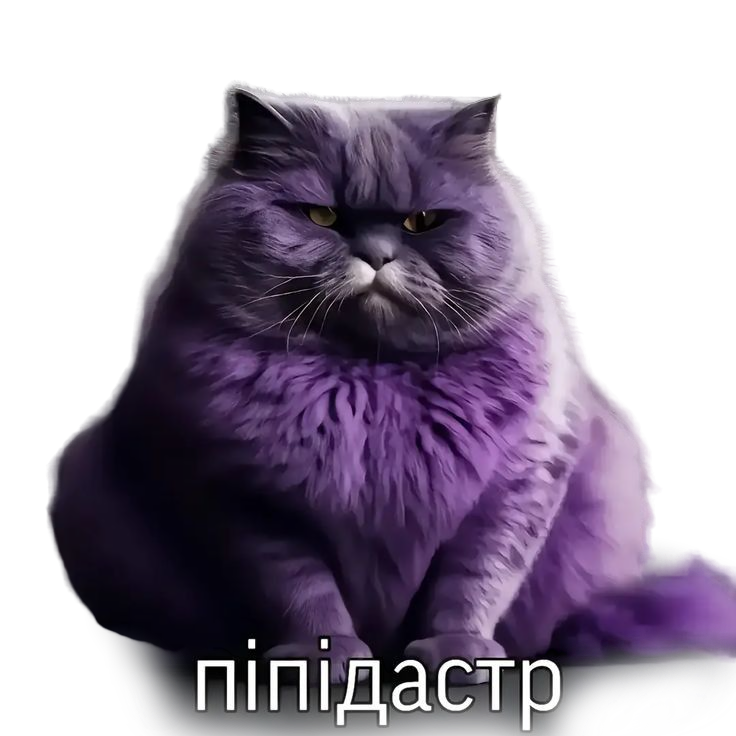
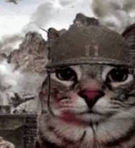
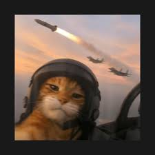

CATVERSE
Вся история интернета сводится к одному - к котам.
Примите наши поздравления. Вы нашли главный культурный артефакт цифровой эпохи. В этих залах хранится не просто экспонаты, а вечные истины, переданные через усы, лапки и бесконечную грацию. Пришло время оценить истинное искусство.
Экспонат №1
Легендарный HAPPY HAPPY CAT, ставший голосом целого поколения в интернете. Символ безграничной кошачьей радости и иронии.
Серый кот с гипнотизирующим взглядом. Его идеальная поза и безмятежное выражение морды стали универсальным символом спокойного принятия, сарказма или полного безразличия. Просто окак.

Экспонат №2

Экспонат №3
Перед вами истинный хранитель интернет-иронии — кот-табби с глазами вселенской мудрости. Его взгляд проникает прямо в душу, а полоски на мордочке будто начертание котоматематикой судьбы. Готов гипнотизировать любого своими усами и магической пушистой шеей
Кот-философ за стеклом, исполняющий ритуал "созерцания корма". Ваш личный гуру гастрономического дзена: он знает - настоящая вкуснятина начинается с механизма глубокого взгляда. И если вдруг жизнь кажется пустой - вспомните: всегда найдётся кот, который медитирует на вашу еду.

Экспонат №4
Этот кот выглядит так, будто его только что застали в самый неловкий момент, и он изо всех сил делает вид, что ничего не произошло.

Экспонат №5
Фиолетовый кот выглядит как суровый аристократ, который молча осуждает всё вокруг и явно считает себя выше происходящего. Подпись «піпідастр» добавляет абсурдности, из-за чего мем становится особенно смешным на контрасте серьёзного выражения и нелепого слова.

Экспонат №6
Взгляд полный суровой решимости, на голове каска “на всякий случай”, за спиной — пейзаж, который явно не обещает ничего хорошего. Этот кот явно из тех, кто не мяукает, а коротко докладывает: “Позиция удерживается. Запасы корма на исходе. Моральный дух — на одном усике”.

Экспонат №7
Когда сказали “держать оборону”, а ты уже на аэродроме, в полной экипировке, с личным запасом наглости. Командование погибло морально ещё до взлёта, когда увидело этого кота в кабине.

Экспонат №8
Серьёзный кот перед огромным взрывом выглядит так, будто он не взорвал мир, а просто немного подогрел атмосферу для настроения.

Экспонат №9
Летит к звездам или просто очень любит шаурму? Разгадка этой космической тайны - в ваших руках!

Экспонат №10
Теперь я знаю, кто на самом деле стоит за всеми странными явлениями в Майнкрафте! Это он – Херобрин-кот!

Экспонат №11
Когда понедельник тебя сломил… и ты стал этим.

Экспонат №12
Это тот самый момент, когда ты только что произнес самую гениальную (как тебе казалось) фразу, или совершил какое-то невероятное действие, а потом внезапно, как гром среди ясного неба, тебя осеняет: "А что я вообще только что сделал?" И вот эта пустая, потерянная, совершенно не понимающая происходящего морда кота – лучшее отражение моего внутреннего состояния в этот момент. Полный ступор, смешанный с легким раскаянием.

Экспонат №13
Представьте, что Сальвадор Дали решил создать свой собственный мем. Это было бы что-то вроде этого. Искаженные черты, неземная перспектива, и чувство, что за этой странностью скрывается какой-то глубокий, пусть и безумный, смысл. Этот кот – произведение цифрового сюрреализма.

Экспонат №14